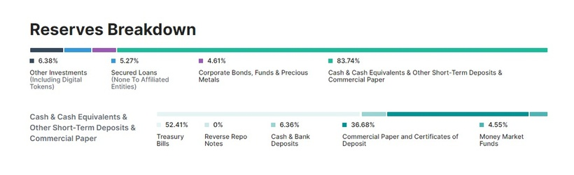
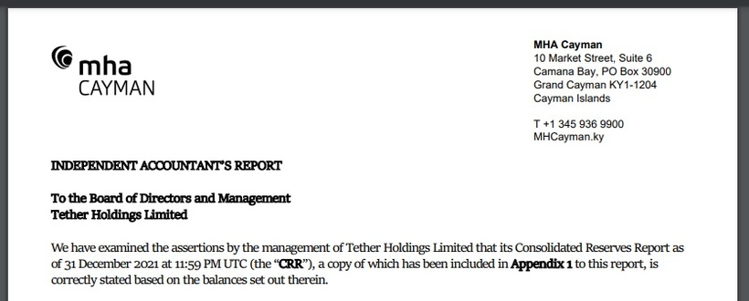
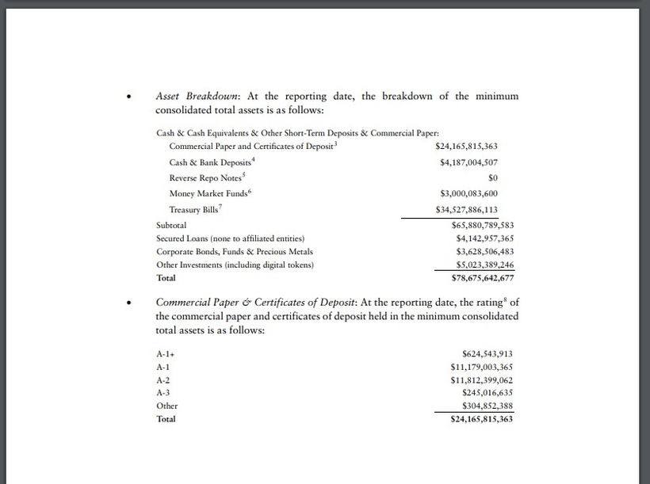
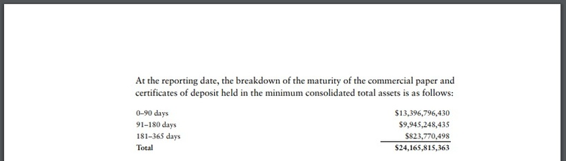
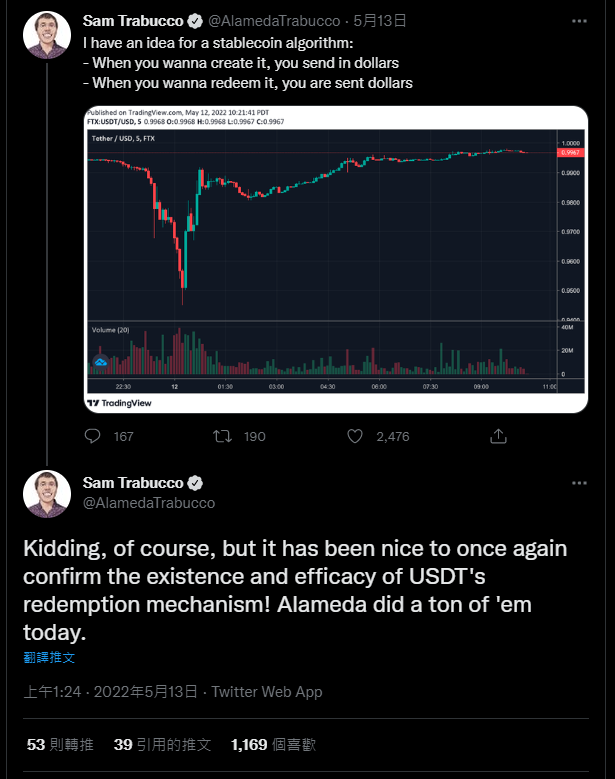
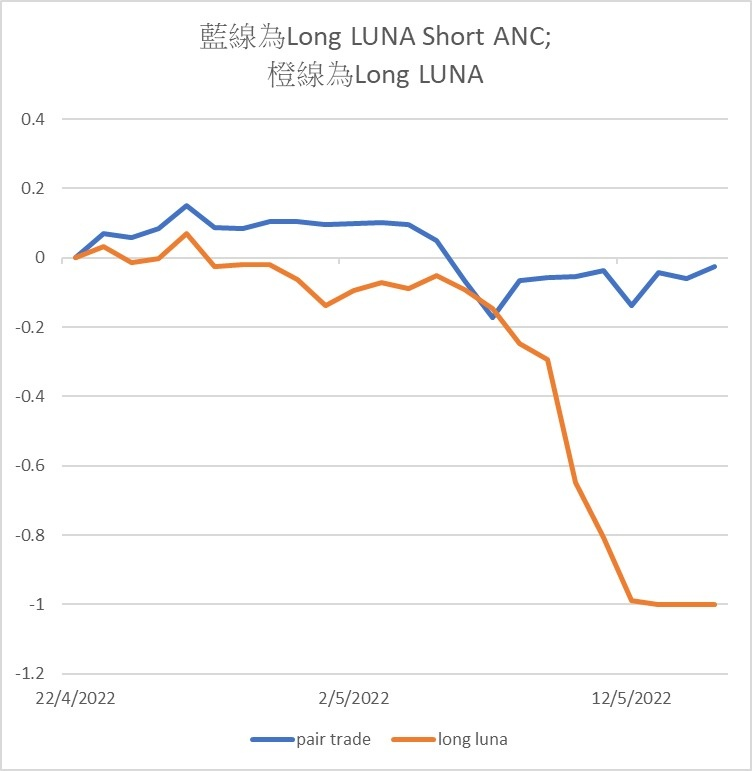
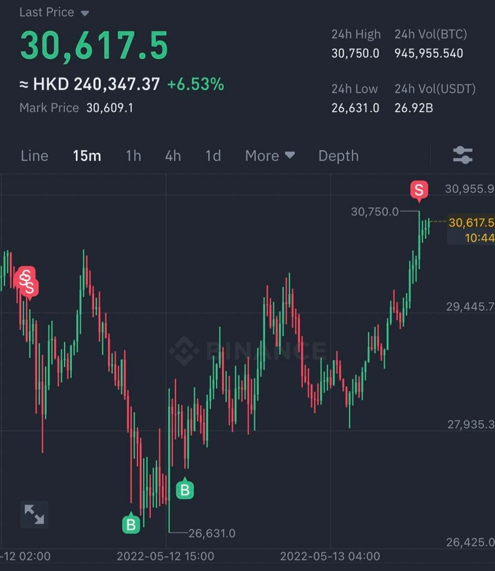

謝謝大家等候小弟的文章，不好意思，近幾個月處於零放假模式，然後每天工作16小時 (寫這文章的我已通頂)，不過，請放心，每月一定會有至少4篇文章，重質不重量。
如題，於UST事件後，很多人擔心USDT脫鉤風險，甚至有朋友於日前已把所有加密貨幣賣掉，再把資金轉回法幣，放回銀行中。
回想週四那天，手機震個不停，Whatsapp總共有百多個unread messages，不外乎都是問：「USDT係咪會爆？」、「你賣哂USDT未？」等等。臨急臨忙我只好在Facebook匆忙出post回應。
（事後竟然有人怪我為何不在Patreon講，而是在Facebook講… 試想想，如果你的目的是短時間幫助及回應更多的人，相信你也會選擇在Facebook派定心丸）
當時提到4個觀點：
1. USDT背後抵押品有37%成為A2商業票據，即類似Investment Grade的債券。現時30天及90天的A2級商業票據利率為1.2%及1.5%，default rate很低，證明市場並不認為A2級債券會爆煲。不過，有人則質疑Tether有否被Audit過，而且是否真的持有A2級以上的票據？
可看看下圖，Tether顯示了其抵押品的分布，偏向分散且安全。

此外，它們找了MHA Cayman的會計公司核數，大家可以Google下圖這家公司做Due diligence。下下圖則顯示其押抵品大部分是A2及A1級票據；而年期則集中於0-90日，以確保流動性。



2. 第二點，USDT是現時Crypto市場的骨幹，大部分合約、現貨交易對都是以USDT作基準。不信可以看看對USDC的交易量有多少，你會發現少得可憐。倘若USDT短期內爆，相信Crypto一定玩完，除非USDT的角色改變。如果USDT unpeg，相信會有大量交易所及莊家出手救濟，因為如果沒有了USDT，交易所盈利大減，莊家收益也大減。
3. 週四那天，USDT unpeg數%時，我發現FTX是最高水的，但仍有大量Bid盤。理論上，如果Bybit及Binance低水而FTX高水，莊家便會在Bybit買，然後FTX賣。所以Bid盤應該出現在Bybit的orderbook，而非FTX的orderbook。可是，卻發現，FTX有大量Bid order在支撐其USDT價格，因此，證明有大戶主觀地不認為USDT會unpeg。
4. FTX出名多大戶用，Bybit則出名多散戶用，FTX高水，Bybit低水，更進一步引證unpeg是散戶主導的，而大戶是冷靜的。
那為甚麼散戶恐慌能推低USDT 3-5%呢？據我觀察，我認為市場莊家(market maker)有意無意quote薄bid orderbook。甚麼是有意無意呢？有意者，指的是故意順著UST的恐慌情緒特意不維持掛鉤關係而令其下跌3-5%；無意者就是小型莊家因為發現其他莊家不太擺放買盤，因而縮盤，以減低風險。
為甚麼要有意讓USDT下跌3-5%呢？
你知道USDT的套利機制嗎？合資格參與者可以拿1顆USDT去向Tether換取$1美元。因此，以$0.95的USDT換取$1的美元便可賺取5.2%的利潤。事後數據顯示，週四當天，共有20億美元USDT被回收。以平均值3%差價算，即市場莊家獲利6000萬美元！
事後，Alameda Research CEO出tweet表示做了很多套利。看到這裡，你該明白為甚麼那時FTX的USDT會高水了… 那當然了，難道低水讓你去套利嗎？因此，完全證實了我上述觀點2-4都是正確無誤的。

這件事亦告訴大家，不要誤信消息或者受群體影響，你必須有批判思考。
==========
那LUNA及UST呢？即使LUNA或UST在未來日子被救起了，也有龐大的信心危機，我不會期望LUNA重回數十美元的水平。有不少朋友這兩天瘋狂短炒LUNA，我就不參與了。因為，你充其量買賣數百美金，總回報有限。但你我也不會敢投入let's say過百萬金額，所以，短炒LUNA是個雞肋，倒不如花時間多做幾個Backtest。
LUNA長倉方面，我主要依靠沽空ANC去cover。最後雖然回報很微薄，但總算避過一劫。很多人結果論地認為我顯示我Short ANC的倉位只是聲東擊西，只是不肯承認我持有LUNA的事實，可惜這真是個不折不扣的Pair trade啊，而且我的long short size接近對等！

如4月14 Patreon《很適合老散的對沖基金策略》中提到的市場中性策略，你看到一隻幣種時，若不想受大市走勢影響，最好挑隻相關性高的幣來同時沽空，以作對沖！LUNA-ANC相關性超過0.9，且基本面有相當關係，是個完美的Pair trade。
雖然最後回報微薄，但你給我回到過去100次，我也是會做這Pair trade。因為倘若LUNA沒爆，LUNA將會因為UST的應用而爆升，而ANC則因為不能維持高staking收益而下跌。本質上，這是一條super make sense的trade，所以我無論如何也會做這操作。留意，我們總不能結果論地看到這條trade不太賺錢，就說這是個不好的trade。若UST沒爆，strategy upside無限；若爆，strategy downside有限，何樂而不為呢？
==========
Funding rate持續負值後，小弟於比特幣在26000-27000美元間撈了底。此外，亦會繼續每月把1-2成free cash供入BTC及ETH等大市值幣。

謹記，不要槓桿，而且只投入2成組合資金。
這句說到口臭，但仍要說，因為我發現有為數不少的人把超過一半身家配置到單一幣種去… 至少，我真的做不到。
大家加油！